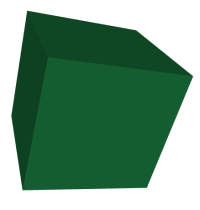
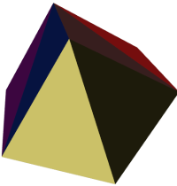
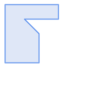
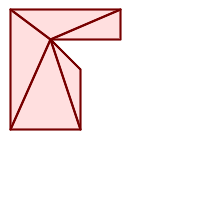

Name
ST_Tesselate — ポリゴンまたは多面体サーフェスのテッセレーションを計算し、TINまたはTINコレクションを返します。
Synopsis
geometry ST_Tesselate(geometry geom);
説明
(MULTI)POLYGONまたはPOLYHEDRALSURFACEのような面を入力に取り、三角形を使ったテッセレーション処理を通してTIN表現を返します。
Availability: 2.1.0
 このメソッドにはSFCGALバックエンドが必要です。
このメソッドにはSFCGALバックエンドが必要です。
この関数は3次元に対応し、Z値を削除しません。
この関数は多面体サーフェスに対応しています。
この関数は三角形と不規則三角網 (TIN)に対応しています。
例
SELECT ST_GeomFromText('POLYHEDRALSURFACE Z( ((0 0 0, 0 0 1, 0 1 1, 0 1 0, 0 0 0)),
((0 0 0, 0 1 0, 1 1 0, 1 0 0, 0 0 0)), ((0 0 0, 1 0 0, 1 0 1, 0 0 1, 0 0 0)),
((1 1 0, 1 1 1, 1 0 1, 1 0 0, 1 1 0)),
((0 1 0, 0 1 1, 1 1 1, 1 1 0, 0 1 0)), ((0 0 1, 1 0 1, 1 1 1, 0 1 1, 0 0 1)) )');
 元の立方体 |
SELECT ST_Tesselate(ST_GeomFromText('POLYHEDRALSURFACE Z( ((0 0 0, 0 0 1, 0 1 1, 0 1 0, 0 0 0)),
((0 0 0, 0 1 0, 1 1 0, 1 0 0, 0 0 0)), ((0 0 0, 1 0 0, 1 0 1, 0 0 1, 0 0 0)),
((1 1 0, 1 1 1, 1 0 1, 1 0 0, 1 1 0)),
((0 1 0, 0 1 1, 1 1 1, 1 1 0, 0 1 0)), ((0 0 1, 1 0 1, 1 1 1, 0 1 1, 0 0 1)) )'));
ST_AsTextの出力: TIN Z (((0 0 0,0 0 1,0 1 1,0 0 0)),((0 1 0,0 0 0,0 1 1,0 1 0)),
((0 0 0,0 1 0,1 1 0,0 0 0)),
((1 0 0,0 0 0,1 1 0,1 0 0)),((0 0 1,1 0 0,1 0 1,0 0 1)),
((0 0 1,0 0 0,1 0 0,0 0 1)),
((1 1 0,1 1 1,1 0 1,1 1 0)),((1 0 0,1 1 0,1 0 1,1 0 0)),
((0 1 0,0 1 1,1 1 1,0 1 0)),((1 1 0,0 1 0,1 1 1,1 1 0)),
((0 1 1,1 0 1,1 1 1,0 1 1)),((0 1 1,0 0 1,1 0 1,0 1 1)))
 彩色した三角形によるテッセレーションを施した立方体 |
SELECT 'POLYGON (( 10 190, 10 70, 80 70, 80 130, 50 160, 120 160, 120 190, 10 190 ))'::geometry;
 元のポリゴン |
SELECT
ST_Tesselate('POLYGON (( 10 190, 10 70, 80 70, 80 130, 50 160, 120 160, 120 190, 10 190 ))'::geometry);
ST_AsTextの出力: TIN(((80 130,50 160,80 70,80 130)),((50 160,10 190,10 70,50 160)),
((80 70,50 160,10 70,80 70)),((120 160,120 190,50 160,120 160)),
((120 190,10 190,50 160,120 190)))
 テッセレーションを施したポリゴン |